Advanced Machine Learning
13: Support Vector Machines
Schedule (you are here )
| # | date | topic | description |
|---|---|---|---|
| 1 | 24-Aug-2026 | Introduction | |
| 2 | 26-Aug-2026 | Foundations of learning | Drop/Add |
| 3 | 31-Aug-2026 | PAC learnability | HW1 |
| 4 | 02-Sep-2026 | Linear learning models | |
| 5 | 07-Sep-2026 | Labor Day Holiday | Holiday |
| 6 | 09-Sep-2026 | Principal Component Analysis | Project ideas |
| 7 | 14-Sep-2026 | Curse of Dimensionality | HW2, HW1 due |
| 8 | 16-Sep-2026 | Bayesian Decision Theory | |
| 9 | 21-Sep-2026 | Parameter estimation: MLE | |
| 10 | 23-Sep-2026 | Parameter estimation: MAP & NB | finalize teams |
| 11 | 28-Sep-2026 | Logistic Regression | HW3, HW2 due |
| 12 | 30-Sep-2026 | Kernel Density Estimation | |
| 13 | 05-Oct-2026 | Support Vector Machines | |
| 14 | 07-Oct-2026 | Matrix Factorization | |
| 15 | 12-Oct-2026 | * Midterm | Exam, HW3 due |
| 16 | 14-Oct-2026 | k-means clustering | |
| 17 | 19-Oct-2026 | Invited: Intro to Causal Learning I |
| # | date | topic | description |
|---|---|---|---|
| 18 | 21-Oct-2026 | Invited: Intro to Causal Learning II | |
| 19 | 26-Oct-2026 | * Mid-point projects checkpoint | HW4, P |
| 20 | 28-Oct-2026 | Expectation Maximization | |
| 21 | 02-Nov-2026 | Stochastic Gradient Descent | |
| 22 | 04-Nov-2026 | Automatic Differentiation | |
| 23 | 09-Nov-2026 | Nonlinear embedding approaches | HW5, HW4 due |
| 24 | 11-Nov-2026 | Model comparison | |
| 25 | 16-Nov-2026 | Model Calibration | |
| 26 | 18-Nov-2026 | Convolutional Neural Networks | |
| 27 | 23-Nov-2026 | Thanksgiving Break | Holiday |
| 28 | 25-Nov-2026 | Thanksgiving Break | Holiday |
| 29 | 30-Nov-2026 | Word Embedding | |
| 30 | 02-Dec-2026 | Project Final Presentations | HW5 due, P |
| 31 | 07-Dec-2026 | Presentation spillover / Exam prep | Classes End |
| 32 | 09-Dec-2026 | * Final Exam | Exam |
| 33 | 16-Dec-2026 | Project Reports | due |
| 34 | 17-Dec-2026 | Grades due 5 p.m. | PAWS |
Outline for the lecture
- Connecting the Dots: The Road to SVM
- Max-Margin Hyperplane & Geometric Margin
- Lagrange Duality & KKT Conditions
- Dual SVM Formulation & Support Vectors
- Kernel Trick & Mercer's Theorem
- Soft-Margin SVM & Hinge Loss View
- SVM in Practice (Scaling, CV, Calibration)
- Take Home Points
Connecting the Dots: The Road to Non-parametric Methods & SVM
| # | date | topic |
|---|---|---|
| 1 | 24-Aug-2026 | Introduction |
| 2 | 26-Aug-2026 | Foundations of learning |
| 3 | 31-Aug-2026 | PAC learnability |
| 4 | 02-Sep-2026 | Linear learning models |
| 5 | 07-Sep-2026 | Labor Day Holiday |
| 6 | 09-Sep-2026 | Principal Component Analysis |
| 7 | 14-Sep-2026 | Curse of Dimensionality |
| 8 | 16-Sep-2026 | Bayesian Decision Theory |
| 9 | 21-Sep-2026 | Parameter estimation: MLE |
| 10 | 23-Sep-2026 | Parameter estimation: MAP & NB |
| 11 | 28-Sep-2026 | Logistic Regression |
| 12 | 30-Sep-2026 | Kernel Density Estimation |
| 13 | 05-Oct-2026 | Support Vector Machines |
Max Margin Classifiers
bayesian decision boundary
- If $\prob{P}{\omega_1|\vec{x}} \gt \prob{P}{\omega_2|\vec{x}}$, decide $\omega_1$
- If $\prob{P}{\omega_1|\vec{x}} \lt \prob{P}{\omega_2|\vec{x}}$, decide $\omega_2$
- $\prob{P}{error|\vec{x}} = \min[\prob{P}{\omega_1|\vec{x}}, \prob{P}{\omega_2|\vec{x}}]$
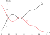
Minimizing the Bayes error is the optimal strategy if we know the posterior exactly!
Decision boundary: 2 classes
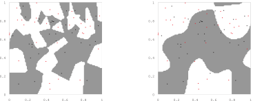
In the general case, we need to non-parametrically estimate the densities
$\prob{P$_{KDE}$}{\vec{x}} = \frac{1}{Nh^d} \sum_{n=1}^N \prob{K}{\frac{\vec{x} - \vec{x}^n}{h}}$, where $\prob{K}{\vec{x}} = (2\pi)^{-d/2}e^{-\frac{1}{2}\vec{x}^T\vec{x}}$
Decision boundary is sensitive to outliers!
Restricted Bayes optimal classifier
Definition: Given a joint distribution $\prob{P$_{KDE}$}{\vec{x},C}$ and a set of classifiers $\cal H$, we say that $h^*$ is a restricted Bayes optimal classifier with respect to $\cal H$ and ${\rm P}_{KDE}$if $h^* \in {\cal H}$ and $\forall h\in {\cal H}$, $\prob{error}{h^*:{\rm P}_{KDE}} \le \prob{error}{h: {\rm P}_{KDE}}$
Restricted Decision boundary
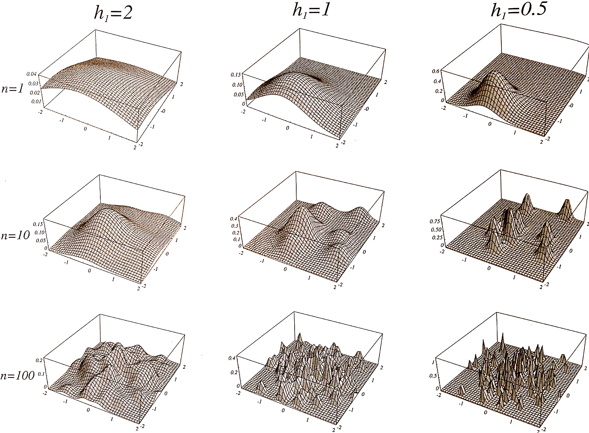
Max-margin hyperplane is Bayes optimal
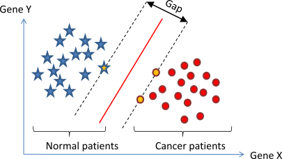
Max-margin Classifier
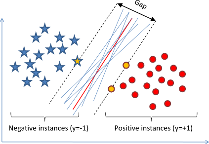
A Hyperplane
- $r_{\color{red}{\vec{x}}} = \frac{|\vec{w}^T{\color{red} \vec{x}} + b|}{\|\vec{w}\|}$
- $r_{\color{red}{\vec{x}}} = \frac{{\color{red}{y}}(\vec{w}^T{\color{red} \vec{x}} + b)}{\|\vec{w}\|}$

Interactive: Decision Hyperplane & Margin Band
Decision "Surface"
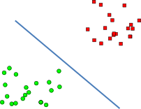
Observation
The distance does not depend on $\|\vec{w}\|$
- $r_i = \frac{y_i(\vec{w}^T{\vec{x}_i} + b)}{\|\vec{w}\|}$
- Scaling by $k$
- $\frac{y_i(k\vec{w}^T{\vec{x}_i} + kb)}{\|k\vec{w}\|} = \frac{k y_i(\vec{w}^T{\vec{x}_i} + b)}{k \|\vec{w}\|} = \frac{y_i(\vec{w}^T{\vec{x}_i} + b)}{\|\vec{w}\|}$
- We are free to set $y_i(\vec{w}^T{\vec{x}_i} + b)$ to whatever we want!
- Let's set it to $y_*(\vec{w}^T{\vec{x}_*} + b) = 1$ for the nearest point
Linear SVM Classifier
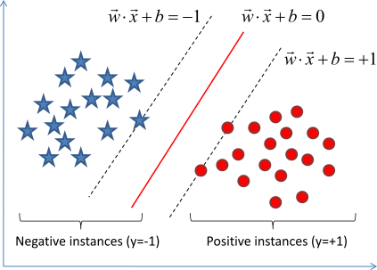
- The gap is distance between parallel hyperplanes \begin{align} \vec{w}^T\vec{x} + b &= -1\\ \vec{w}^T\vec{x} + b &= 1\\ \end{align}
- The gap is distance between parallel hyperplanes \begin{align} \vec{w}^T\vec{x} + (b + 1) &= 0\\ \vec{w}^T\vec{x} + (b - 1) &= 0\\ \end{align}
- $D = |b_1 - b_2|/\|\vec{w}\|$
- $D = 2/\|\vec{w}\|$
To maximize the gap, need to minimize $\|\vec{w}\|$ or equivalently $\frac{1}{2}\|\vec{w}\|^2$ ($\frac{1}{2}\vec{w}^T\vec{w}$)
Linear SVM Classifier
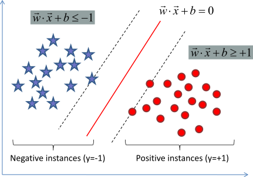
- Instances must be correctly classified \begin{align} \vec{w}^T\vec{x}_i + b & \le -1 \mbox{ if } y_i = -1\\ \vec{w}^T\vec{x}_i + b & \ge +1 \mbox{ if } y_i = +1\\ \end{align}
- Equivalently $y_i(\vec{w}^T\vec{x}_i + b) \ge 1$
Want to minimize $\frac{1}{2}\|\vec{w}\|^2$ subject to $y_i(\vec{w}^T\vec{x}_i + b) \ge 1$ for $i=1,\dots, N$
Classify new instance $\vec{x}$ as $f(\vec{x}) = \mbox{sign}(\vec{w}^T\vec{x} + b)$
Linear SVM: primal formulation
Minimize $\frac{1}{2}\|\vec{w}\|^2$ subject to $y_i(\vec{w}^T\vec{x}_i + b) - 1 \ge 0$ for $i=1,\dots, N$
- Primal formulation of linear SVM
- It is a convex quadratic programming (QP) optimization problem with $d$ variables and $N$ constraints
\begin{align} \underset{\vec{w} \in \RR^m}{\argmin} \vec{w}^T {\mathbf Q} \vec{w} & + \vec{w}^T\vec{c} + \epsilon \\ {\mathbf A}\vec{w} & \le \vec{b} \\ {\mathbf A} \in \RR^{n\times m}, \vec{w} & \in \RR^m, \vec{b}\in \RR^n\\ {\mathbf C}\vec{w} & = \vec{d} \\ {\mathbf C} \in \RR^{s\times m}, \vec{d} &\in \RR^s\\ \end{align}
Lagrange Duality
Joseph-Louis Lagrange
Lagrange Duality: general form
- minimize $f(x)$
- subject to
- $c_1(x) \ge 0, \dots, c_C(x) \ge 0$
- $g_1(x) \le 0, \dots, g_G(x) \le 0$
- $h_1(x) = 0, \dots, h_H(x) = 0$
- minimize$_x$ and maximize$_{\alpha_i, \lambda_i, \mu_i}$
saddle point - \begin{align} \Lambda(x, \alpha, \lambda, \mu) & = f(x) - \sum_{i=1}^{C} \alpha_ic_i(x) \\ &+ \sum_{i=1}^{G} \lambda_i g_i(x) - \sum_{i=1}^{H} \mu_i h_i(x) \end{align}
- subject to $\alpha_i \ge 0, \; \lambda_i \ge 0, \; \mu_i \in \mathbb{R}$
Karush-Kuhn-Tucker (KKT) Necessary Optimality Conditions
1. Stationarity: $\nabla_x \Lambda = 0$ | 2. Primal Feasibility: $c_i(x^*) \ge 0, \; g_i(x^*) \le 0, \; h_i(x^*) = 0$
3. Dual Feasibility: $\alpha_i \ge 0, \; \lambda_i \ge 0$ | 4. Complementary Slackness: $\alpha_i c_i(x^*) = 0, \; \lambda_i g_i(x^*) = 0$
Karush-Kuhn-Tucker (KKT) conditions
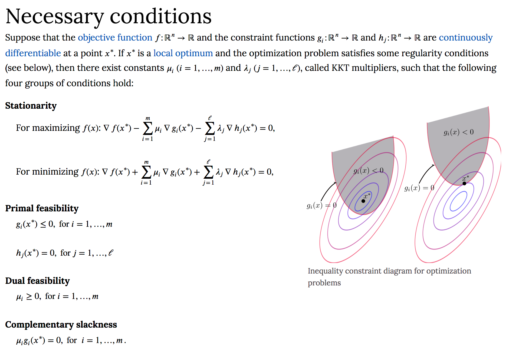
For convex problems with regular constraints (Slater's condition), KKT conditions are both necessary and sufficient for global optimality!
Interactive Lagrange Multipliers
Lagrange Duality: example 1
$\min_x x^2$
s.t. $x \ge b$
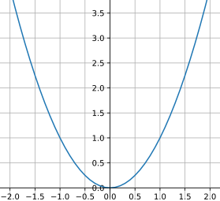
$x^* = 0$s.t. $x\ge -1$
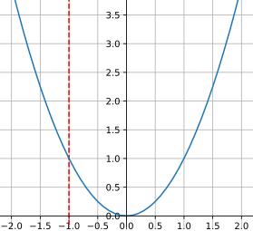
$x^* = 0$s.t. $x\ge 1$
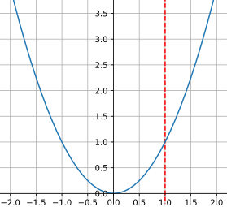
$x^* = 1$Lagrange Duality: example 1
$\min_x x^2$Let's move the constraint to the objective Lagrangian
s.t. $x \ge b$ or $x-b\ge 0$
$L(x, \alpha) = x^2 - \alpha(x-b)$
s.t. $\alpha \ge 0$
Solve: $\min_x \max_{\alpha} L(x, \alpha)$
s.t. $\alpha \ge 0$
Interactive: Primal vs. Dual Saddle Explorer
Lagrange Duality: example 2
Find the largest area rectangle inside an ellipse
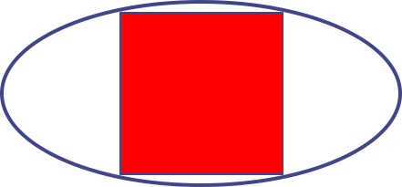
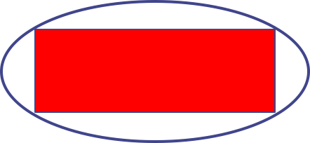
Lagrange Duality: example 2
Find the largest area rectangle inside an ellipse
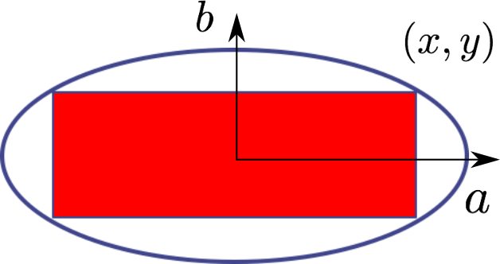
- maximize the area $4xy$
- subject to
- $\frac{x^2}{a^2} + \frac{y^2}{b^2} \le 1$
Ellipse equation
$\frac{x^2}{a^2} + \frac{y^2}{b^2} = 1$
- maximize
- $\Lambda(x,y,\alpha) = 4xy - \alpha (\frac{x^2}{a^2} + \frac{y^2}{b^2} - 1)$
- subject to
- $\alpha \ge 0$
Lagrange Duality: example 2
Find the largest area rectangle inside an ellipse
- $\frac{\partial \Lambda}{\partial x} = 4y - \frac{2\alpha x}{a^2} = 0$
- $\frac{\partial \Lambda}{\partial y} = 4x - \frac{2\alpha y}{b^2} = 0$
- $\frac{\partial \Lambda}{\partial \alpha} = \frac{x^2}{a^2} + \frac{y^2}{b^2} - 1 = 0$
- $x = \frac{a}{\sqrt{2}}$
- $y = \frac{b}{\sqrt{2}}$
- $\alpha = 2ab$
Lagrange Duality: example 2
Main point
Using Lagrangian multipliers and KKT conditions can convert a constrained problem into an unconstrained saddle-point problem.
Dual formulation of SVM
Linear SVM: dual formulation
- Lagrangian saddle problem: $\min_{\vec{w}, b} \max_{\vec{\alpha} \ge 0} \Lambda(\vec{w}, b, \vec{\alpha}) = \frac{1}{2}\|\vec{w}\|^2 - \sum_{i=1}^N \alpha_i \left[ y_i(\vec{w}^T\vec{x}_i + b) - 1 \right]$
-
Stationarity conditions ($\nabla_{\vec{w}, b} \Lambda = 0$):
$$\frac{\partial\Lambda}{\partial \vec{w}} = 0 \implies \vec{w} = \sum_{i=1}^N \alpha_i y_i \vec{x}_i \qquad \text{and} \qquad \frac{\partial\Lambda}{\partial b} = 0 \implies \sum_{i=1}^N \alpha_i y_i = 0$$
-
Substitute $\vec{w}$ and the constraint into $\Lambda$ to obtain the Dual Quadratic Program:
$$\max_{\vec{\alpha}} \sum_{i=1}^N \alpha_i - \frac{1}{2} \sum_{i,j=1}^N \alpha_i \alpha_j y_i y_j (\vec{x}_i^T\vec{x}_j) \quad \text{s.t.} \quad \alpha_i \ge 0, \; \sum_{i=1}^N \alpha_i y_i = 0$$
- Recovering the classifier: $f(\vec{x}) = \text{sign}\left(\sum_{i=1}^N \alpha_i y_i (\vec{x}_i^T\vec{x}) + b\right)$ | $b = y_k - \vec{w}^T\vec{x}_k$ for any SV ($\alpha_k > 0$).
Why "Support Vectors"? (Sparsity via KKT)
KKT Complementary Slackness: $\alpha_i \left[ y_i(\vec{w}^T\vec{x}_i + b) - 1 \right] = 0 \quad \forall i$
These points have zero weight in $\vec{w}$. Removing them changes nothing!
These are the Support Vectors holding up the margin slabs!
$$\vec{w} = \sum_{i \in \text{SV}} \alpha_i y_i \vec{x}_i$$
Out of $N=100,000$ data points, often only a few dozen support vectors define the entire decision boundary.
Linear SVM: problems and solutions
The data may not be linearly separable
- $\phi(\vec{x})$: map the data into higher dimensions and hope for the best
- Soft-margin: allow some error
Support Vector Machines
Max Margin Classifiers
- Given two classes $A$ and $B$
Data is a set of labeled examples $\{(\vec{x}_i,y_i)\}_{i=1}^N$ - Bayesian Decision Boundary: Distributions are known \begin{align}\nonumber g(\vec{x}) = P(A|\vec{x}) - P(B|\vec{x}) =0 \end{align}
- Maximum Margin Hyperplane: Only data is given
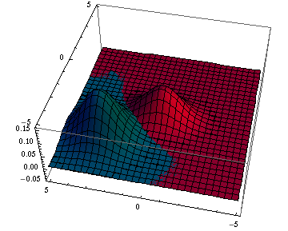
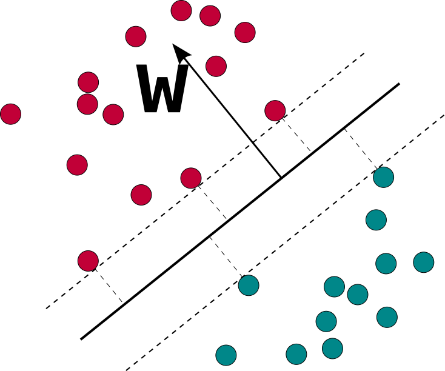
Mapping to Higher Dimensions
- A two class problem:
not separable by a line - Map each point into a higher dimensional space: \begin{align} \nonumber \vec{\eta}_i = \Phi(\vec{x}_i) \end{align}
- Choose $\Phi$ so the data becomes linearly separable \begin{align} \nonumber \Phi(\vec{x}) = (x_1^2,\sqrt{2}x_1x_2,x_2^2) \end{align}
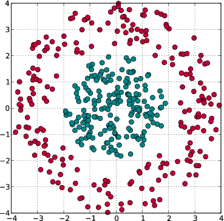
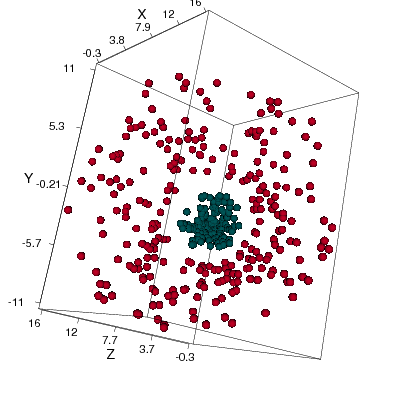
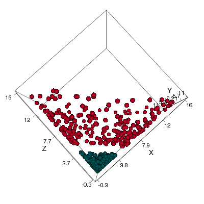
Kernel Trick
Appropriate mappings are hard to construct. What to do?
- Dimensions can be many
even $\infty$ ! Have to compute very expensive inner product? - Avoid it by defining Hilbert spaces with kernels (and Mercer's theorem) \begin{align}\nonumber \langle\Phi(\vec{x}),\Phi(\vec{y})\rangle &=& \vec{k}(\vec{x},\vec{y})\\ \nonumber (x_1^2,\sqrt{2}x_1x_2,x_2^2) (y_1^2,\sqrt{2}y_1y_2,y_2^2)^T &=& (\vec{x}\cdot\vec{y})^2 \\\nonumber x_1^2y_1^2 + 2x_1x_2y_1y_2 + x_2^2y_2^2 &=& (x_1y_1 + x_2y_2)^2 \end{align}
- Take a linear algorithm, replace inner products with kernels and get a nonlinear algorithm as a result!
Kernel Trick for SVM
Maximize $\sum_{i=1}^N \alpha_i - \frac{1}{2} \sum_{i,j=1}^N \alpha_i\alpha_j y_i y_j (\vec{x}_i^T\vec{x}_j)$
subject to $\alpha_i \ge 0$ and $\sum_{i=1}^N \alpha_i y_i = 0$
Final classifier: $f(\vec{x}) = \mbox{sign}\left(\sum_{i=1}^N \alpha_i y_i (\vec{x}_i^T\vec{x}) + b\right)$
Replace inner product $\vec{x}_i^T\vec{x}_j$ with kernel $K(\vec{x}_i,\vec{x}_j)$:
Maximize $\sum_{i=1}^N \alpha_i - \frac{1}{2} \sum_{i,j=1}^N \alpha_i\alpha_j y_i y_j K(\vec{x}_i,\vec{x}_j)$
subject to $\alpha_i \ge 0$ and $\sum_{i=1}^N \alpha_i y_i = 0$
Final classifier: $f(\vec{x}) = \mbox{sign}\left(\sum_{i=1}^N \alpha_i y_i K(\vec{x}_i, \vec{x}) + b\right)$
Matrix form: Maximize $\vec{\alpha}^T\mathbf{1} - \frac{1}{2} \vec{\alpha}^T \mathbf{Y}\mathbf{G}\mathbf{Y} \vec{\alpha}$
subject to $\vec{\alpha} \ge 0$ and $\vec{\alpha}^T \vec{y} = 0$, where $\mathbf{Y} = \operatorname{diag}(\vec{y})$, $G_{ij} = K(\vec{x}_i, \vec{x}_j)$
Mercer's Theorem
Common Kernels & Hyperparameters
Standard dot product, fastest, baseline for text/high-dim.
Feature combinations up to degree $d$ without explicit expansion.
Corresponds to an infinite-dimensional feature Hilbert space!
- Small $\gamma$ (broad $\sigma$): Kernels have wide support. Decision boundary is smooth and flat → High bias, low variance.
- Large $\gamma$ (narrow $\sigma$): Kernels have tight local support around each training point → High variance, overfitting (spiky isolated islands).
Kernels do not guarantee linear separability
Soft Margin SVM
Introduce slack variables $\xi_i \ge 0$ allowing margin violations
$\xi_i = 0$: correctly outside or on margin.
$0 < \xi_i \le 1$: inside margin, correctly classified.
$\xi_i > 1$: misclassified!
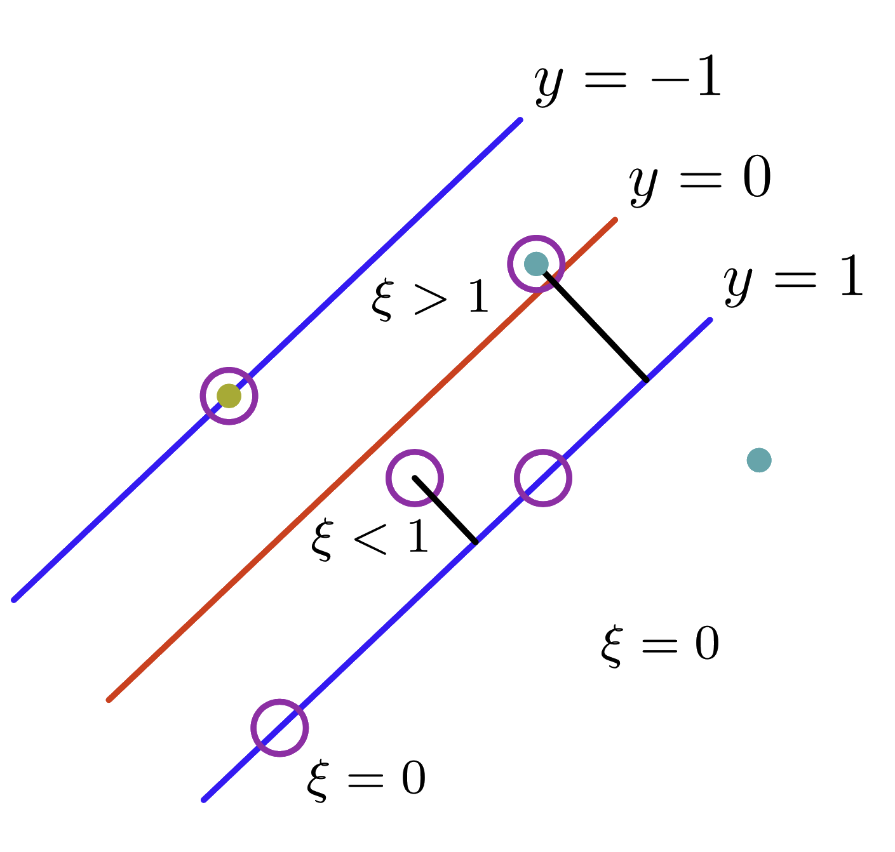
Dual Soft-Margin QP: Maximize $\vec{\alpha}^T\mathbf{1} - \frac{1}{2} \vec{\alpha}^T\mathbf{Y}\mathbf{G}\mathbf{Y}\vec{\alpha}$
subject to $0 \le \alpha_i \le C$ and $\vec{\alpha}^T \vec{y} = 0$
Soft Margin SVM Primal & Box Constraint
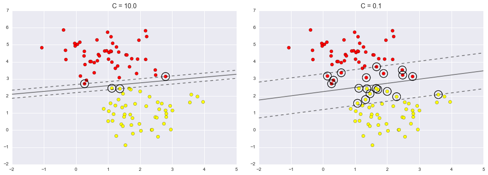
Primal Problem: $\min_{\vec{w}, b, \vec{\xi}} \frac{1}{2}\|\vec{w}\|^2 + C\sum_{i=1}^N \xi_i \quad \text{s.t.} \quad y_i(\vec{w}^T\vec{x}_i + b) \ge 1 - \xi_i, \; \xi_i \ge 0$
Multiplier $\beta_i \ge 0$ for $\xi_i \ge 0 \implies \frac{\partial L}{\partial \xi_i} = C - \alpha_i - \beta_i = 0 \implies \alpha_i + \beta_i = C \implies \mathbf{\alpha_i \le C}$!
Interactive: 2D Kernel SVM Playground
The Loss Function Perspective: Hinge Loss
• For $z \ge 1$: Hinge loss is identically zero with zero subgradient → points beyond the margin do NOT exert any pull on $\vec{w}$ ($\alpha_i = 0$ sparsity!). Contrast with Logistic loss which keeps gently pulling forever!
SVM in Practice: Engineering Workflow
Distances and margins directly depend on Euclidean scales. Always apply standard z-score normalization!
Tune $(C, \gamma)$ simultaneously over a log scale: $C \in [10^{-2}, 10^3]$, $\gamma \in [10^{-3}, 10^1]$ using K-fold Cross Validation.
One-vs-Rest (OvR): Train $K$ classifiers.
One-vs-One (OvO): Train $K(K-1)/2$ pairwise classifiers (standard in LibSVM).
SVM outputs uncalibrated scores $f(\vec{x}) \in \mathbb{R}$, not probabilities. To get well-calibrated posteriors: $$P(y=1|\vec{x}) = \frac{1}{1 + \exp(A f(\vec{x}) + B)}$$ Fit parameters $A, B$ on held-out validation data via maximum likelihood! (Preview to Lecture 22 Calibration).
from sklearn.svm import SVC
clf = SVC(C=1.0, kernel='rbf', gamma='scale',
probability=True)
clf.fit(X_train, y_train)Take Home Points
- Restricted Bayes Optimal: SVM finds the unique global optimum of a strictly convex quadratic program maximizing geometric margin $\gamma = 2/\|\vec{w}\|$.
- Support Vectors & Sparsity: By KKT complementary slackness, only critical boundary points have $\alpha_i > 0$. Uninformative points outside the margin have $\alpha_i = 0$ and can be discarded.
- The Kernel Trick: Replacing inner products $\vec{x}^T\vec{z}$ with positive semi-definite kernels $K(\vec{x},\vec{z})$ constructs non-linear decision surfaces in high/infinite dimensions with zero dimensional penalty.
- Soft Margin & Hinge Loss: Slack variables $\xi_i$ balance margin maximization against classification errors, corresponding to an $\ell_2$-regularized empirical Hinge loss objective.
- SVM in Practice: Always standardize features, tune $(C, \gamma)$ jointly on a logarithmic grid, use OvR/OvO for multiclass, and apply Platt calibration when probabilities are required.
Reading References
- Textbook Chapters:
- C. Bishop, Pattern Recognition and Machine Learning (2006) — Chapter 7 (Sparse Kernel Machines, pp. 325–360).
- S. Shalev-Shwartz & S. Ben-David, Understanding Machine Learning (2014) — Chapter 15 (Support Vector Machines, pp. 201–220).
- K. Murphy, Machine Learning: A Probabilistic Perspective (2012) — Chapter 14 (Kernel Methods & SVMs).
- Foundational Papers:
- C. J. C. Burges (1998). A Tutorial on Support Vector Machines for Pattern Recognition. Data Mining and Knowledge Discovery.
- S. Tong & D. Koller (2000). Support Vector Machine Active Learning with Applications to Text Classification. JMLR.
- B. Schölkopf, R. Herbrich, & A. J. Smola (2001). A Generalized Representer Theorem. COLT / JMLR.